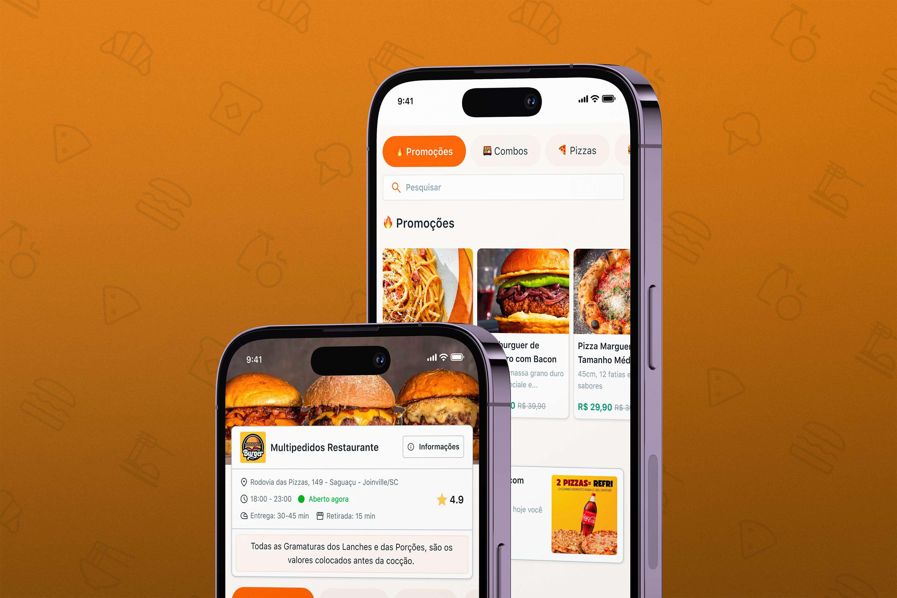

Multipedidos: design system and UX at 10M+ monthly accesses
As the sole designer, built the product design sector from scratch at a food-tech platform serving 10M+ monthly accesses. Created the design system, restructured UX flows, and introduced AI-assisted prototyping that cut delivery time by 60%.
10M+
Monthly platform accesses
60%
Faster prototype delivery